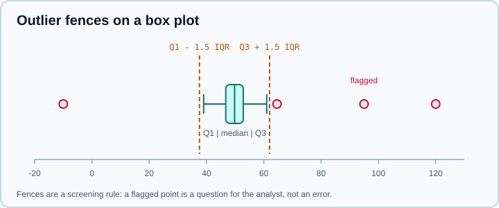

Data Cleaning & Preparation
|
This content was generated with the assistance of AI and should be verified against the official documentation before being relied on in production. |
Real data is rarely ready to analyse. Values are missing or encoded as -999, the same customer is spelled three ways, a
number arrives as the text "1,250.50", dates are ambiguous, and one sensor reported a temperature of 4,000 degrees.
Cleaning is the work of turning that raw material into a table in which every column has one meaning, one type and one
set of valid values. It is also where most of the judgement in a project lives, because every cleaning rule is a
decision about what the data means.
This page is concept-first and uses pandas for the mechanics. Examples target Python 3.13 or 3.14 and were run on Python 3.13. It targets pandas 3.1 and NumPy 2.5, as checked against the official documentation in October 2026. Every code block was executed on those versions and the printed output is the real output. The detailed method reference lives in the pandas sub-section, for example Missing Data, Duplicate Labels & Rows and Text Data & the str Dtype. For the R equivalents see missing and special values and tidyr, purrr and stringr.
A cleaning workflow
Cleaning goes faster and is easier to defend when it follows a fixed order. Each step uses the output of the previous one.
Three principles apply to every step.
-
Never edit the raw data. Read it, transform it in code, write the result elsewhere. A cleaning script that can be re-run is documentation of every decision.
-
Prefer flagging to deleting. Adding an
is_imputedoris_outliercolumn keeps information that deleting rows destroys, and lets a later analysis choose. -
Make each rule explicit and testable. "Age is between 0 and 120" is a check that can fail loudly; "I looked at the ages" is not.
Cleaning that learns something from the data (a mean to fill gaps, a scaling factor, a category list) must be fitted on the training data only, or the evaluation leaks information from the test set. That boundary is covered in Feature Engineering and Model Evaluation & Validation; deterministic rules such as removing exact duplicates or fixing a unit can safely run before splitting.
Tidy data
Hadley Wickham’s Tidy Data (Journal of Statistical Software, 2014) gives the structure that most analysis tools expect:
-
every variable is a column,
-
every observation is a row,
-
every type of observational unit is a table.
Messy tables usually break one of these rules: column headers that are values (one column per year), several variables
in one column ("M_25-34" holding sex and age group), or variables stored in both rows and columns. The reshaping
functions melt, pivot and stack convert between layouts; this page only needs the idea.
import pandas as pd
wide = pd.DataFrame({
"city": ["Madrid", "Lima"],
"2025": [3.4, 10.2],
"2026": [3.6, 10.9],
})
tidy = wide.melt(id_vars="city", var_name="year", value_name="population_m")
tidy["year"] = tidy["year"].astype("int16")
print(tidy)
print(tidy.pivot(index="city", columns="year", values="population_m"))Output on pandas 3.1:
city year population_m
0 Madrid 2025 3.4
1 Lima 2025 10.2
2 Madrid 2026 3.6
3 Lima 2026 10.9
year 2025 2026
city
Lima 10.2 10.9
Madrid 3.4 3.6Source: pandas user guide, Reshaping and pivot tables; Wickham, Tidy Data; R for Data Science, Data tidying.
The wide layout is not wrong. It is convenient for presentation and for some matrix operations. The point is to choose it deliberately instead of inheriting it, and to keep one tidy version as the source for plotting and modelling.
Inspect before changing anything
Start by looking at the data as pandas read it. The example dataset used on this page is a small orders table with the defects that real exports have: padded and inconsistent text, a thousands separator, a sentinel, a duplicated row, an unparsable date.
import io
import pandas as pd
raw = io.StringIO("""order_id,customer,country,amount,ordered_at,status
1001,Ana Lopez,ES,"1,250.50",2026-03-01,shipped
1002, bruno kim ,es,980,2026-03-02,SHIPPED
1002, bruno kim ,es,980,2026-03-02,SHIPPED
1003,Chen Wei,CN,n/a,2026-03-04,pending
1004,Dana Ruiz,,-999,2026-03-05,shipped
1005,Eli Cohen,IL,310.25,not a date,cancelled
""")
df = pd.read_csv(raw, dtype={"order_id": "int64"})
df.info()
print(df.isna().sum())<class 'pandas.DataFrame'>
RangeIndex: 6 entries, 0 to 5
Data columns (total 6 columns):
# Column Non-Null Count Dtype
--- ------ -------------- -----
0 order_id 6 non-null int64
1 customer 6 non-null str
2 country 5 non-null str
3 amount 5 non-null str
4 ordered_at 6 non-null str
5 status 6 non-null str
dtypes: int64(1), str(5)
memory usage: 619.0 bytes
order_id 0
customer 0
country 1
amount 1
ordered_at 0
status 0
dtype: int64Source: pandas.read_csv and DataFrame.describe.
Read the output as a list of questions.
-
amounthas dtypestr, not a number, so at least one value cannot be parsed as a number. Here it is the thousands separator in"1,250.50". Then/awas already recognised as missing, which is why the non-null count is 5. -
ordered_atis text, so dates were not parsed; andcountryhas one missing value that is really an empty field. -
In pandas 3 text columns default to the
strdtype (a string dtype backed by PyArrow when it is installed), notobject. A check such asser.dtype == objectis now false for text; usepd.api.types.is_string_dtype(ser). The missing value in astrcolumn isNaN.
df.describe(include="all"), df.nunique(), df["col"].value_counts(dropna=False) and df.sample(5, random_state=0)
complete a first look; the next page, Exploratory Data Analysis, continues from there.
Missing values
A missing value is an observation that should exist but was not recorded. How to treat it depends first on why it is missing, and only then on which pandas function to call.
How pandas represents missing data
| Marker | Where it appears | Notes |
|---|---|---|
|
float columns, the |
A floating-point value. |
|
datetime and timedelta columns |
The datetime equivalent. |
|
nullable dtypes: |
A single missing value that works in any nullable dtype and keeps integers as integers. |
Giving an integer column a missing value used to force it to float64. The nullable integer dtype Int64 keeps the
integers and uses pd.NA. With skipna=True (the default) pandas reductions ignore missing values. NumPy functions do
not: np.mean on a plain NumPy array returns nan as soon as one value is NaN. Called on a Series, np.mean
dispatches to Series.mean and therefore skips the NaN, so the difference only shows once the data has left pandas,
for example through to_numpy():
import io
import numpy as np
import pandas as pd
s = pd.Series([1, None, 3], dtype="Int64")
print(s)
print(s.isna().tolist())
v = pd.Series([1.0, np.nan, 3.0])
print(v.mean(), v.mean(skipna=False))
print(np.mean(v), np.mean(v.to_numpy()))0 1
1 <NA>
2 3
dtype: Int64
[False, True, False]
2.0 nan
2.0 nanSentinels hide missing data
The most damaging missing values are the ones that do not look missing: -999, 9999, 0 for "unknown", "unknown",
".", "?", a placeholder date such as 1900-01-01. A mean computed over a column containing -999 is wrong without any
warning. Find them in the summaries (a minimum far below the rest, an impossible spike in value_counts) and tell the
parser about them when reading:
import io
import pandas as pd
csv = "id,score,city\n1,7.5,Madrid\n2,-999,NA\n3,,Lima\n4,n/a,\n"
default = pd.read_csv(io.StringIO(csv))
print(default)
explicit = pd.read_csv(io.StringIO(csv), na_values={"score": ["-999"]})
print(explicit) id score city
0 1 7.5 Madrid
1 2 -999.0 NaN
2 3 NaN Lima
3 4 NaN NaN
id score city
0 1 7.5 Madrid
1 2 NaN NaN
2 3 NaN Lima
3 4 NaN NaNread_csv already treats a built-in list of strings (the empty string, NA, N/A, n/a, NaN, null, None and a few
more) as missing. Two behaviours trap people. First, a legitimate value such as the country code NA (Namibia) or the
surname Null is silently turned into a missing value. Set keep_default_na=False and list the markers yourself when
that matters. Second, na_values accepts a per-column dictionary, so a sentinel that is meaningful in one column is not
removed from another.
Why a value is missing
Rubin’s classification (1976) is the standard vocabulary and it determines which fixes are defensible.
| Mechanism | Meaning | Consequence |
|---|---|---|
MCAR, missing completely at random |
The chance of being missing does not depend on any variable, observed or not. A lab sample was dropped. |
Dropping rows loses information but does not bias results. |
MAR, missing at random |
The chance of being missing depends on observed variables. Younger respondents skip the income question more often, and age is recorded. |
Dropping rows can bias results; modelling the missingness from the observed variables can correct it. |
MNAR, missing not at random |
The chance of being missing depends on the missing value itself. High earners decline to state their income. |
No purely statistical fix from the data alone. It needs domain knowledge, a sensitivity analysis or a better data source. |
Check for a pattern before choosing a strategy: compare the other variables for rows with and without the missing value
(df.groupby(df["income"].isna()).mean(numeric_only=True)), and look at whether missingness clusters in time, in one
source system or in one customer segment. Missingness that follows the data collection process is information, so keep
an indicator column for it.
Drop, fill or model
| Strategy | When it is reasonable | Cost |
|---|---|---|
|
Few rows affected and MCAR plausible; the target itself is missing. |
Loses data; biases results under MAR or MNAR. |
|
A column that is mostly empty and not important. |
Loses a feature that may matter when it is present. |
Constant fill |
A missing value has a real meaning, such as "no previous order" meaning 0 orders. |
The constant must be justified; an arbitrary 0 distorts statistics. |
Mean, median or mode |
Quick baseline for numeric or categorical features. |
Shrinks the variance and weakens correlations; use the median for skewed data. |
Forward or backward fill, interpolation |
Ordered data (time series, sensor readings) where neighbours are informative. |
Invents values; bound the gap with |
Model-based imputation |
Missingness depends on other features. |
More complex; must be fitted inside the training fold. See Imputing Missing Values. |
import numpy as np
import pandas as pd
df = pd.DataFrame({"t": pd.date_range("2026-01-01", periods=6, freq="D"),
"v": [1.0, np.nan, np.nan, 4.0, np.nan, 6.0]})
print(df.assign(ffill=df["v"].ffill(limit=1),
linear=df["v"].interpolate(),
med=df["v"].fillna(df["v"].median())))
print(df.dropna(subset=["v"]).shape) t v ffill linear med
0 2026-01-01 1.0 1.0 1.0 1.0
1 2026-01-02 NaN 1.0 2.0 4.0
2 2026-01-03 NaN NaN 3.0 4.0
3 2026-01-04 4.0 4.0 4.0 4.0
4 2026-01-05 NaN 4.0 5.0 4.0
5 2026-01-06 6.0 6.0 6.0 6.0
(3, 2)Source: DataFrame.interpolate and the missing data guide.
ffill(limit=1) filled only one row of a two-row gap, which is the point of limit: do not carry a stale reading across
a long outage. dropna also has how="all" (drop a row only when every value is missing), thresh=n (keep rows with
at least n non-missing values) and subset (a list of the columns to look at).
Two further rules prevent common errors.
-
Do not impute the target. Rows with an unknown label cannot teach a supervised model anything; drop them or set them aside.
-
Keep an indicator.
df["income_missing"] = df["income"].isna()before filling lets a model, or a reviewer, see where the data was invented.
Duplicates
Duplicates come from repeated exports, joins that multiply rows, retries in a data pipeline and manual entry. Decide what "the same record" means before removing anything: a whole identical row, or the same key with different attributes.
print(df.duplicated().sum()) # fully identical rows
print(df.duplicated(subset="order_id", keep=False).sum()) # every row that shares a key
df = df.drop_duplicates(subset="order_id", keep="first")duplicated() marks the second and later occurrences (keep="first", the default); keep=False marks all of them, which
is what you want when inspecting conflicts. On the sample orders the first line prints 1 and the second prints 2.
When the duplicates differ in some columns, drop_duplicates keeps whichever comes first, so sort first by the rule that
defines the winner (for example the most recent updated_at) and then drop. A key that should be unique can be asserted
afterwards with df["order_id"].is_unique. Source:
DataFrame.duplicated and
Duplicate Labels.
Near-duplicates ("Ana López" and "Ana Lopez") need normalisation first (next sections), and genuinely fuzzy matching
(record linkage) is a separate problem that dedicated libraries address.
Types and conversion
A column with the wrong dtype hides errors and wastes memory. Convert explicitly, and decide what a failed conversion means.
df["customer"] = df["customer"].str.strip().str.title()
df["country"] = df["country"].str.upper()
df["status"] = df["status"].str.lower().astype("category")
df["amount"] = pd.to_numeric(
df["amount"].astype("string").str.replace(",", "", regex=False), errors="coerce")
df["ordered_at"] = pd.to_datetime(df["ordered_at"], errors="coerce", format="%Y-%m-%d")
print(df)
print(df.dtypes)
print(df[df["ordered_at"].isna()])Running the whole inspect, parse and clean sequence on the sample (with na_values=["-999"] in read_csv) gives:
order_id customer country amount ordered_at status
0 1001 Ana Lopez ES 1250.5 2026-03-01 shipped
1 1002 Bruno Kim ES 980.0 2026-03-02 shipped
3 1003 Chen Wei CN <NA> 2026-03-04 pending
4 1004 Dana Ruiz NaN <NA> 2026-03-05 shipped
5 1005 Eli Cohen IL 310.25 NaT cancelled
order_id int64
customer str
country str
amount Float64
ordered_at datetime64[us]
status category
dtype: object
order_id customer country amount ordered_at status
5 1005 Eli Cohen IL 310.25 NaT cancelledSource: pandas.to_numeric and pandas.to_datetime.
Points worth knowing:
-
errors="coerce"turns anything unparsable intoNaNorNaT. That is convenient and dangerous: it converts data errors into missing values without a trace. Count the failures (df["ordered_at"].isna().sum()before and after) and inspect the rows that failed, as the last line above does. The olderrors="ignore"option was removed in pandas 3.0. -
Always pass
format=toto_datetimefor known layouts. Without it pandas infers a format from the first value and a string such as03/04/2026is ambiguous between 3 April and 4 March.dayfirst=Trueresolves it for a whole column, but only an explicit format makes the intent reviewable. -
Datetimes parse to microsecond resolution (
datetime64[us]) in pandas 3. Code written for the old nanosecond default, for example converting a datetime column to integers and expecting nanoseconds, now gives values 1000 times smaller. -
Low-cardinality text (status, country, plan) is better as a
category: it saves memory, orders levels explicitly and makes a typo visible as an unexpected level. Checkdf["status"].cat.categoriesafter conversion. -
Identifiers that look like numbers (postcodes, phone numbers, product codes with leading zeros) are labels, not quantities. Read them as strings (
dtype={"zip": "string"}) or the leading zero is lost. -
Choose the narrowest sufficient type only after cleaning (
int16,float32,category); doing it earlier turns the cleaning step into an overflow hunt.
Text, units and encodings
String columns accumulate variants: leading and trailing spaces, mixed case, non-breaking spaces, different Unicode
normal forms, smart quotes, and values with the unit embedded ("12 kg", "3,5 m"). Normalise with the .str accessor,
in this order: strip whitespace, fold case, replace known variants, then validate against the allowed set.
s = pd.Series([" Madrid", "madrid ", "MADRID", "Madr1d", None], dtype="string")
clean = s.str.strip().str.casefold()
allowed = {"madrid", "lima"}
print(clean.isin(allowed).tolist())
print(clean[~clean.isin(allowed) & clean.notna()].tolist())This prints [True, True, True, False, False] and then ['madr1d']: the typo survived the clean-up and is now visible as
a value outside the allowed set. The .str methods propagate missing values instead of failing on them. Regular
expressions in str.replace are off by default (regex=False), so a pattern must opt in with regex=True.
Other rules for text and numbers:
-
Units. Store one unit per column and put it in the column name (
weight_kg,duration_s). Convert at the boundary, in one place, and never mix feet and metres in a column. A failed unit conversion is a classic source of outliers. -
Currency and decimals.
"1.250,50"(European) and"1,250.50"(US) parse differently. Declarethousands=anddecimal=inread_csvrather than stripping characters by hand. -
Encodings. If text contains mojibake such as
"José", the file was decoded with the wrong encoding. Re-read it withencoding="utf-8"or the real one ("latin-1","cp1252"), instead of repairing characters afterwards. -
Unicode. Normalise with
unicodedata.normalize("NFC", text)before comparing, so that a composed and a decomposed accent compare equal.
Dates and time zones
Time data fails in predictable ways: mixed formats in one column, two-digit years, local timestamps with no zone, and daylight-saving transitions. Three habits prevent most of them.
-
Store instants in UTC and convert for display. A timezone-aware column keeps its zone in the dtype (
datetime64[us, Europe/Madrid]). -
Localise naive timestamps explicitly with
tz_localize(attach a zone) and move between zones withtz_convert. Never subtract a naive timestamp from an aware one. -
Decide what to do with the two awkward hours of each daylight-saving change: one local time that does not exist (spring forward) and one that happens twice (fall back).
import pandas as pd
naive = pd.Series(pd.to_datetime(["2026-03-29 01:30", "2026-03-29 02:30", "2026-10-25 02:30"]))
try:
naive.dt.tz_localize("Europe/Madrid")
except ValueError as e:
print(type(e).__name__)
loc = naive.dt.tz_localize("Europe/Madrid", nonexistent="shift_forward", ambiguous="NaT")
print(loc)
print(loc.dt.tz_convert("UTC"))ValueError
0 2026-03-29 01:30:00+01:00
1 2026-03-29 03:00:00+02:00
2 NaT
dtype: datetime64[us, Europe/Madrid]
0 2026-03-29 00:30:00+00:00
1 2026-03-29 01:00:00+00:00
2 NaT
dtype: datetime64[us, UTC]Source: Series.tz_localize, pandas time series guide and the zoneinfo module.
Madrid skipped from 02:00 to 03:00 on 29 March 2026, so 02:30 does not exist; and on 25 October 2026 the clock repeated
the hour from 02:00 to 03:00, so 02:30 is ambiguous. The default is to raise, which is the safe choice. shift_forward
moves the nonexistent time to the next valid instant, and ambiguous="NaT" marks the repeated hour as missing; when the
data is ordered you can use ambiguous="infer", and otherwise supply a boolean array that says which occurrence each row
is. Time zone data comes from the IANA database through zoneinfo; pandas 3 no longer installs pytz, so code that
imports it needs a replacement. Period and offset aliases changed too (M became ME, H became h), as covered in
Time Series & Dates.
Outliers
An outlier is a value far from the bulk of the data. It is not automatically an error. It may be a data-entry mistake, a unit mix-up, a sensor fault, or the single most interesting observation in the dataset (a fraud, a failure, a rare disease). Detection is mechanical; the decision is not.

Three common rules, from simplest to most robust:
| Rule | Definition | Behaviour |
|---|---|---|
Z-score |
|
Quick, but the outlier inflates the mean and standard deviation that are used to detect it (masking). Assumes a roughly normal distribution. |
Tukey IQR fences |
Below |
Uses quartiles, so it is robust to the outliers themselves. The multiplier 1.5 is a convention, and 3 is used for "far out" points. |
Robust (MAD) z-score |
|
Uses the median and the median absolute deviation. Preferred for small or skewed samples. |
import numpy as np
import pandas as pd
rng = np.random.default_rng(42)
x = pd.Series(np.r_[rng.normal(50, 5, 200), [95, 120, -10]], name="x")
q1, q3 = x.quantile([0.25, 0.75])
iqr = q3 - q1
low, high = q1 - 1.5 * iqr, q3 + 1.5 * iqr
print(round(low, 2), round(high, 2), x[(x < low) | (x > high)].round(1).tolist())
med = x.median()
mad = (x - med).abs().median()
robust_z = 0.6745 * (x - med) / mad
print("robust z flags:", int((robust_z.abs() > 3.5).sum()))
z = (x - x.mean()) / x.std()
print("plain z flags:", int((z.abs() > 3).sum()))
clipped = x.clip(lower=low, upper=high)
print(round(x.mean(), 2), round(clipped.mean(), 2), round(x.std(), 2), round(clipped.std(), 2))37.54 62.0 [64.6, 95.0, 120.0, -10.0]
robust z flags: 3
plain z flags: 3
50.12 49.89 8.44 4.59Source: DataFrame.clip, scipy.stats.median_abs_deviation and the NIST/SEMATECH detection of outliers.
The IQR rule flagged four points, including 64.6, an ordinary draw from the normal part of the sample that lies just
past the upper fence: with 200 normal values a few fall outside the fences by chance, which is why a flag is a prompt to
look, never proof. Both z-score variants flagged three points. Clipping at the fences (winsorising) cut
the standard deviation from 8.44 to 4.59 while the mean barely moved.
What to do with a flagged point, in order of preference:
-
Investigate. Trace it to the source. A height of 1.8 recorded as 180 is an error; a 10 million transaction in a payments table may be real.
-
Correct it if the right value is known (unit fix, typo), and record the correction.
-
Keep it and use robust methods (median, rank-based tests, Huber or quantile regression) when it is real.
-
Cap it (winsorise) or transform the variable (logarithm) when extreme values are real but dominate a statistic.
-
Remove it only with a documented reason, and report results with and without it.
Univariate rules miss points that are only unusual in combination, such as a 2-metre child. For multivariate outliers see Outlier & Novelty Detection, and for formal single-outlier tests the NIST handbook’s Grubbs' test, which assumes normality.
Validation
After cleaning, turn expectations into checks that fail loudly. A short block of explicit assertions at the end of a cleaning script catches regressions when the source data changes.
import pandas as pd
df = pd.DataFrame({"id": [1, 2, 2], "age": [34, 210, 41], "email": ["a@x.org", "bad", None]})
checks = {
"id is unique": df["id"].is_unique,
"age in 0..120": df["age"].between(0, 120).all(),
"email looks valid": df["email"].str.contains(r"^[^@\s]+@[^@\s]+\.\w+$", na=False).all(),
}
for name, ok in checks.items():
print(f"{'PASS' if ok else 'FAIL'} {name}")
df.loc[~df["age"].between(0, 120), "age"] = pd.NA
print(df["age"].dtype, df["age"].tolist())FAIL id is unique
FAIL age in 0..120
FAIL email looks valid
float64 [34.0, nan, 41.0]Useful checks: unique keys, allowed value sets, numeric ranges, no missing values in required columns, row counts that
match the source, referential integrity between tables (every customer_id in orders exists in customers), and date
logic (shipped_at >= ordered_at). In a script, raise on failure (assert, or raise ValueError) so a pipeline
stops instead of passing bad data downstream. Validation libraries such as Pandera and Great Expectations express the
same checks declaratively and produce reports; they are third-party packages with their own documentation and are not
needed for the concepts on this page. For data that arrives continuously, see the data-quality discussion in
LLMOps data operations.
Pitfalls that corrupt data silently
| Pitfall | What happens in pandas 3.1 | Do this instead |
|---|---|---|
Chained assignment: |
Never modifies |
|
|
Removed in 3.0; raises |
|
|
Deprecated in 3.1 on |
Reassign: |
|
Removed in 3.0. |
|
|
Removed in 3.0. |
|
Growing a frame with |
|
Collect rows in a list and call |
|
Data errors become missing values without a trace. |
Count and inspect the failures. |
Float into an integer column |
Upcasting on assignment is rejected (PDEP-6). |
Convert the column first, or use a nullable dtype. |
|
False in pandas 3 because text is |
|
The first three rows were run on pandas 3.1:
import warnings
import numpy as np
import pandas as pd
df = pd.DataFrame({"a": [1, 2, 3], "b": [10, 20, 30]})
mask = df["b"] > 15
with warnings.catch_warnings(record=True) as caught:
warnings.simplefilter("always")
df["a"][mask] = 99 # chained assignment
print([w.category.__name__ for w in caught], df["a"].tolist())
df.loc[mask, "a"] = 99
print(df["a"].tolist())
s = pd.Series([1.0, np.nan, 3.0])
try:
s.fillna(method="ffill")
except TypeError as e:
print("TypeError:", e)
print(s.ffill().tolist())['ChainedAssignmentError'] [1, 2, 3]
[1, 99, 99]
TypeError: NDFrame.fillna() got an unexpected keyword argument 'method'
[1.0, 1.0, 3.0]Where older tutorials and books are outdated
Material written before 2023 (many popular books and blog posts) shows patterns that no longer work or that behave differently. The table lists the ones that matter for cleaning, with the version in which each changed.
| Older pattern | Changed | Current practice |
|---|---|---|
|
Deprecated in 2.1, removed in 3.0 |
|
|
Removed in 2.0 |
|
|
Removed in 1.0 |
|
The |
Removed in 3.0 |
|
|
Removed in 3.0 |
|
|
Replaced by |
|
|
Text defaults to |
|
|
Deprecated in 3.1 |
Reassign the result |
|
Replaced by |
|
Frequency alias |
Removed in 3.0 |
|
Checklist
-
Raw data is read-only; the cleaning is a script that can be re-run.
-
Types are explicit: numbers, dates and categories are parsed, identifiers are text.
-
Sentinels are mapped to missing at read time, with
na_values, per column. -
Duplicates are defined by a key and removed with a deterministic rule.
-
Text is stripped, case-folded and checked against allowed values; each column has one unit.
-
Timestamps carry a time zone, stored as UTC, and daylight-saving edge cases are handled on purpose.
-
Missingness is understood (MCAR, MAR or MNAR) before it is filled, and an indicator column is kept.
-
Outliers are investigated, and any change is documented and reversible.
-
Anything fitted on the data (imputation values, scalers) is fitted on training data only.
-
Explicit checks fail the pipeline when an expectation breaks.
References
-
pandas user guide, Working with missing data
-
pandas user guide, Duplicate Labels
-
pandas user guide, Time series and date functionality
-
pandas user guide, Migration guide for pandas 3
-
pandas API, read_csv, to_numeric, to_datetime, interpolate, clip
-
Python, zoneinfo
-
Hadley Wickham, Tidy Data, Journal of Statistical Software 59(10), 2014
-
Wickham, Cetinkaya-Rundel and Grolemund, R for Data Science, Data tidying and Missing values
-
NIST/SEMATECH e-Handbook of Statistical Methods, Detection of outliers
-
SciPy, median_abs_deviation
-
D. B. Rubin, "Inference and missing data", Biometrika 63(3), 1976 (the MCAR, MAR and MNAR classification)